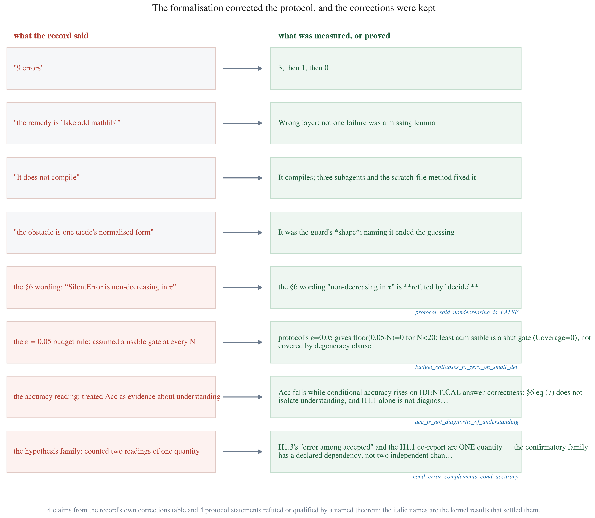
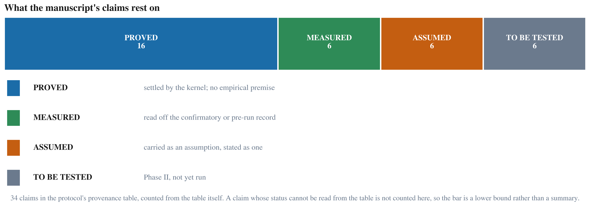

Orthographic Channels and Input Noise as Structural Disturbances in Human–Model Interaction
Detailed research protocol
Instrument: the pinned JEV encoder · Licence: see docs/PHASE_I_PIN.md · Phase I: English, keyboard-faithful typos, frozen parameters
GENERATED FILE — DO NOT EDIT. Source of truth: protocol/NHB_Orthographic_Channels_JEV_Research_Protocol.md v1.23 sha256 81dcbad6f097584d831c32c12120ae800f2400cb507dc96ccb87adde40a3b014 (1250 lines). Built 2026-10-07 16:38. Rebuild: python scripts/build_manuscript_html.py
§14
§12 · O2 + Erratum 1
§12 · O3
§12 item 3
§12 item 7
Erratum 1
Orthographic Channels and Input Noise as Structural Disturbances in Human–Model Interaction
A Pre-Registered, Phased Protocol Integrating System One / JEV-Ecosystem Tooling
Document type: Detailed research protocol (Nature Human Behaviour–oriented framing)
Version: 1.23 (English typo first, then cross-script / multilingual expansion)
Status: Stage 1 pre-registration complete; Stage 2 confirmatory run complete
Compute envelope: Single consumer GPU admissible; zero paid API on confirmatory path
Primary interface class: Typed decision models (System One):
$\texttt{state} \times \texttt{questions} \mapsto$ distributions over caller-defined options
Abstract
Typed-decision systems backed by language models are increasingly asked to answer under the small orthographic errors that real keyboards produce. A widely repeated premise holds that such noise is especially dangerous because it drives errors past confidence gates: wrong answers that arrive with high confidence, and are therefore never seen. We pre-registered a test of that premise, and it fails.
The protocol was frozen before any confirmatory data existed, and the instrument — an open, non-autoregressive encoder under a permissively licensed revision — was pinned by digest and never trained. A dev pre-run of 2,520 trials measured feasibility, the paired discordance rate, and the power of the design before the seal; the confirmatory run then used the untouched test split: 652 items × 7 noise levels × 3 frozen seeds = 13,692 trials, zero failures. The analysis was fixed in advance: exact paired permutation tests, Holm correction across a three-hypothesis family, and the direction of every hypothesis enforced, so that a significant movement the wrong way counts as a violation rather than as support.
All three hypotheses were confirmed, with no direction violations. Typo noise cost ≈12 accuracy points (p = 4.4 × 10⁻³⁶) and ≈29 coverage points (p = 5.0 × 10⁻⁵) — far fewer trials were answered at all. But the gate's discriminability did not degrade: the within-arm AUC between correct and incorrect trials rose from 0.601 to 0.760 (p = 2.0 × 10⁻⁴). 93.6 % of the errors the noise caused arrived below the gate, against 61.4 % clean. The original fixed-threshold silent-error hypothesis was refuted on dev by four independent probes before the confirmatory run and replaced, in the pre-registration record, by the discriminability hypothesis that then replicated.
For typographic noise the "silent error" premise does not hold: the errors are loud, and the gate can hear them. Damage concentrates in what the model declines to answer, not in what it confidently gets wrong — which makes confidence a usable control signal under orthographic noise, and relocates the risk from undetected wrong answers to silent refusal. The pre-registration record, the machine-checked core of the protocol (27 theorems, zero axioms), and the whole pipeline are released.
Authorities: docs/PHASE_I_CONFIRMATORY_RESULTS.md, protocol §17, docs/PHASE_I_DEV_PRERUN_RESULTS.md, and
the formalization repository.
v1.3 names the gate's threshold LIMEN and adds the one estimand that naming makes legible.
v1.2 recorded three decisions that earlier work had already made. The protocol is the research
objective, so a change to it may not be made only in a downstream document — if an amendment
contradicts the protocol, the protocol is what must move. Every such change is marked vN CHANGE
at the point it applies, and each names the document that motivated it, so the protocol's own
history stays legible.
| Version | Changes | Status |
|---|---|---|
| 1.16 | §12.1 became an evidence chain: a fourth status, MEASURED, for claims the dev pre-run settled on the pinned instrument. The generator now fails if a MEASURED row quotes a value that does not appear in docs/PHASE_I_DEV_PRERUN_RESULTS.md — a measurement quoted from nowhere is the same defect as a proof that was never done. It fired on first run and caught two tokens, which is the check working |
a claim's status now distinguishes proof from measurement |
| 1.15 | §16 Dev pre-run added: feasibility, π_d, power re-derived, and the H1.2 direction contradiction, now confirmed across all three frozen seeds and both grid endpoints in 2,520 records. The clean condition is identical across seeds, which is a self-check on the generator; λ_lo = 0.05 does not degrade performance, so lo is genuinely unperturbed |
adds pre-run evidence to the deliverable; no confirmatory claim |
| 1.14 | H1.2's direction is contradicted by the pinned instrument on dev — SilentError@0.9 FALLS (0.0357 → 0.0107) under noise, because risk_mono plus confidence deflation means fewer trials clear the gate at all. An amendment to restate H1.2 on the conditional quantity CondErr@0.9 is TABLED, not accepted; the test split is untouched. Also records the dev pre-run: 560 records in 28.8 s, 0 failures, π_d measured 0.2036 against the frozen 0.1833 — higher, and favourable, so N = 652 stands |
flags a hypothesis as un-runnable as written |
| 1.13 | Estimator named: §4.5 now specifies exact paired permutation tests instead of "paired / mixed models with item random intercepts", and enforces the DIRECTION of each hypothesis (a significant movement in the opposite direction is barred from the family rather than counted as support). O3 closed without a human pass: six automatic consistency checks with a shuffled-label control, reliability carried by split-half stability; inter-rater kappa is rejected as the reliability instrument. The seal is no longer blocked by O3 | names the estimator that runs; removes the last human dependency |
| 1.12 | §4.5 gains two pre-registered covariates (realised_edit_rate, lexical routability margin) and registers the routability × noise interaction as EXPLORATORY, so the confirmatory family stays at three tests. The item bank is also corrected: 69 states opened with a lowercase letter, all of them in three urgency templates, which would have made a domain-by-formatting confound — found by the new mechanical template audit and fixed semantics-preservingly, with 0 packed stimuli affected |
adds covariates; adds NO confirmatory hypothesis |
| 1.11 | O3 scoped by measurement: the plausibility pass shrinks from 932 items to 47, one per template, justified by η²(margin | template) = 0.9142; lexical routability is measured (median +0.111, 8.5 % above 0.30) and pre-registered as a covariate, with the routability × noise interaction registered as exploratory so the confirmatory family stays at three tests |
scopes a pre-registration item; adds no confirmatory hypothesis |
| 1.10 | O1 CLOSED: §12 item 2 moves to FIXED — λ_lo = 0.05, λ_mid = 0.18 selected by the noisy-channel recoverability index against the published Rayner (2006) anchor (0.4480), separation 6.07 pooled seed SD. The seal is now blocked by O3 alone |
closes a pre-registration item; the criterion is stated on a measured axis and is fully determined by it |
| 1.9 | §15 Machine-checked core added — every theorem with its statement and the claim it bears on, generated from the Lean source. The theorem-to-claim map must be a bijection or the generator fails, so no proof can be undeclared and none can be cited that does not exist; the section also states HOW the check is trusted (kernel query, negative control, freshness guard) | additive; presentation of proofs already relied on |
| 1.8 | §4.4a's bootstrap CI on Δτ* withdrawn — the estimator is a least-crossing |
functional and the bootstrap has no general coverage for it, and at the boundary the clean arm
occupies it is degenerate. Replaced by the exact admissible-set interval [τ*, τ_max],
machine-checked by admissible_iff_limen_le | withdraws a planned procedure; no frozen value
moved, §4.4a stays reported and non-confirmatory |
| 1.7 | §12.1 claim provenance added — a derived table mapping every substantive claim to PROVED (naming a kernel-verified theorem), ASSUMED (a premise the design chose) or TO BE TESTED (the run decides). The generator fails if a PROVED row names a theorem that does not exist, so the table cannot claim a proof that was never done | additive; presentation only, no frozen value moved |
| 1.6 | (1) §4.4a corrected: at the clean end the least-admissible rule returns a design constant, not an estimate — Δτ* is one estimate minus a constant and its clean endpoint carries no sampling variability; (2) the Δτ* < 0 branch is normally unattainable and must be checked, not assumed; (3) Δτ* = 0 does not identify "no disturbance" — a tolerance-absorbed disturbance reports identically | additive; §4.4a stays reported and non-confirmatory |
| 1.5 | (1) §6.1 defines the conditional quantities — CondErr/CondAcc, the two things the hypotheses name and eqs (7)–(9) never defined; (2) §4.5 states the confirmatory family in the protocol instead of by reference to the OSF entry; (3) a declared dependency: H1.3 disjunct 2 is the complement of the H1.1 co-report, so they are not independent evidence; (4) the H1.1 co-report is fixed as descriptive, not a fourth test | additive; family unchanged at three tests, no frozen value moved |
| 1.4 | (1) equation (7) is stated as underspecified on deferred trials, with both readings (defers-as-errors / defers-dropped) named and shown to disagree — machine-checked by acc_is_not_diagnostic_of_understanding; (2) H1.1 paired with the conditional accuracy in reporting, because the bare inequality is satisfied by confidence deflation alone; (3) §4.4b records what machine-checking changed | additive; no frozen value moved, no endpoint added |
| 1.3 | (1) LIMEN named as the gate's threshold (§0.3), with what the name does and does not carry; (2) the claim stated directly (§0.4); (3) the limen-shift diagnostic $\Delta\tau^\star$ added as a reported, non-confirmatory quantity (§4.4a) | additive; no frozen value moved |
| 1.2 | (1) Q0 is intent alone; (2) the pin is decided — Laya English root at 55cf4c4e…; (3) the τ* fitting rule is stated, including when it yields nothing | — |
0. Thesis and staging principle
THE GLOBAL ANCHOR
This protocol is the programme's global anchor. Every other document in this repository — pre-registration, amendments, the item-bank spec, the manuscript, the review records, the dashboards — is subordinate to it and derives from it.
What that means mechanically, and how it is enforced:
- A change to the research objective is a change to THIS file. If work elsewhere reaches a
conclusion that contradicts this protocol, the protocol is what moves — a downstream amendment
cannot silently redefine the objective. Every such change is marked
vN CHANGEat the point it applies and names the document that motivated it, so the protocol's own history stays legible. - The objective's identity is checked mechanically. A guard verifies that this file is present, that its recorded sha256 matches, and that the version in §14 agrees with the version in the header. A file that drifts from the anchor is drift by definition.
- "What are we working on?" has exactly one answer, and it is §0–§1 of this file. If any other document's summary of the objective disagrees with §0–§1, this file wins without discussion.
- What does NOT anchor here, deliberately. Instruments, toolboxes, run logs and review records are
inputs and outputs of the programme, not the programme. They are admitted on the three criteria in
docs/INSTRUMENT_POSTURE.md(usable, scientific, reproducible) and then used as shipped. The anchor states what is being asked; it does not state how the asking is instrumented.
Current anchor identity: protocol/NHB_Orthographic_Channels_JEV_Research_Protocol.md,
version 1.5. Its sha256 is recorded in config/anchor.json and verified by the drift guard.
0.1 Thesis
Human–model language interaction is a structurally biased coupled control system; writing systems and input noise are normal disturbances, not exceptions. System One (JEV-ecosystem) tooling makes the control law—confidence-gated action—directly observable and programmable.
0.2 Staging principle (methodological)
Cross-script structural bias is the long-run scientific target. However, noise processes, gold labels, and power calculations are channel-specific. Therefore the programme is deliberately phased:
| Phase | Channel scope | Noise scope | Confirmatory claim |
|---|---|---|---|
| I (anchor) | English, standard Latin orthography only | English typos (keyboard-faithful) | Noise is a normal operating disturbance for System One control metrics (error, SilentError, coverage) |
| II (extension) | + ≥1 non-English / non-Latin (or distinct input ecology) | Script-faithful noise (not Latin rules copied) | Script × noise interaction and cross-channel allocational disparity |
Rule: Phase II pre-registration is filed only after Phase I instruments (items, $\mathcal{N}_{\mathrm{en}}$, logging, gates) are frozen and pilot-stable. Phase I must not be re-opened to “hunt” interactions after seeing Phase II.
0.3 LIMEN — the gate's threshold, named
LIMEN (Latin limen, threshold) names the threshold inside the confidence gate: the value at which graded evidence becomes committed action. In this protocol LIMEN is $\tau$ — the argument of $g_\tau$ in §3.4.
The name is mechanical, not metaphorical. It fixes what the object is: a decision boundary instantiated by $g_\tau$, at which the system stops accumulating evidence and commits. It does not carry any extra theoretical commitment, and adopting it changes nothing about the mathematics: every $\tau$ in this protocol was already a number on a scale, and still is.
Four things the name explicitly does NOT assert, each of which the measurements could contradict:
- That the limen exists at every condition. The pilot's clean
SilentError@0.9was 0/120, which makesRisk(τ) = 0across the whole grid and every threshold admissible — the budget then selects nothing, and §6/v1.2 CHANGE 3 already requiresCoverage@εto be reported as undefined with a reason in that case. A limen that the data cannot identify is a result, not a failure, and it must be reported as such. - That the limen is unique. Risk is monotone non-increasing in $\tau$, so the admissible set is upward closed and an admissible threshold is never unique. The tie-break is declared (least admissible threshold, §6/v1.2 CHANGE 3), not discovered.
- That the limen is well calibrated. It is a threshold on the model's own confidence $c = \max_j p_j$, which the pinned instrument is documented to ship over-confident (card: mean ECE 0.466). The limen's location is a property of the instrument as shipped; whether that location is epistemically right is a separate question this protocol does not answer and does not need to.
- That the limen is the same for every channel. §5.2 forbids equating noise across scripts by rate alone for the same reason: a limen estimated under one channel's noise process says nothing about another's, because both the evidence $c$ and the budget's referent are channel-specific.
What the name buys. It makes one thing legible that the earlier notation hid: the limen is an estimand, not a setting. $\tau \in \{0.80, 0.90\}$ are fixed probes placed at pre-registered positions; $\tau^\star_\varepsilon$ is fitted per condition on dev. Those are three different quantities, and prose that says "the threshold" conflates them. Naming the limen forces the question "did the limen move?" — which is answerable (§4.4a), rather than the unanswerable "what is the threshold?"
0.4 The claim, stated directly
Thesis. Human–model language interaction is a structurally biased coupled control system in which orthographic channels and input noise are normal disturbances, not exceptions.
Mechanism, in one line. An intention is not transmitted through a neutral channel. It is encoded through an orthographic channel $s$ under channel-specific noise $n \sim \mathcal{N}_s(\lambda)$ as $x = E(i, s, n)$; a frozen decision model converts it to graded evidence $(\mathbf{p}, c) = f_\theta(x, q)$; and a confidence gate $a = g_\tau(\mathbf{p}, c)$ converts evidence into action. LIMEN (§0.3) is the limen in $g_\tau$.
The research objective. To test how $\lambda$ and $s$ shift that gate and the resulting
control metrics — Acc, SilentError@τ, Coverage@ε.
Staged test. Phase I fixes $s = s_{\mathrm{en}}$ and treats English keyboard-faithful typo noise as a normal disturbance. Phase II introduces $s_1$ — a non-Latin or otherwise distinct input ecology — with script-faithful noise, and tests script × noise interaction and cross-channel allocational disparity.
A constraint on how this objective may be worded, and why it is stated here. The objective names both $\lambda$ and $s$, because the programme spans both phases. No single phase may test both. Phase I estimates functions of $\lambda$ at one channel and may say nothing about $s$ (§0.2, §5.2, §8); Phase II is the only phase in which $s$ varies. Any sentence of the form "we test how $\lambda$ and $s$ shift the limen" is a statement about the programme, not a description of what Phase I does — and the pre-registration is the place where that distinction is enforced.
What the programme does not claim. It does not claim that noise is exceptional, nor that English typo results establish cross-script fairness. It claims that orthographic channels and input noise are structural disturbances of the control loop itself — of understanding and of the gate, not merely of text generation.
1. Formal system model
1.1 Interaction cycle
| Symbol | Domain | Meaning |
|---|---|---|
| $i$ | intention space | User communicative / task intention |
| $s \in \mathcal{S}$ | orthographic channels | Phase I: $s = s_{\mathrm{en}}$ only; Phase II: $s \in \{s_{\mathrm{en}}, s_{1}, \ldots\}$ |
| $n \sim \mathcal{N}_s(\lambda)$ | noise process | Channel-specific; Phase I uses $\mathcal{N}_{\mathrm{en}}$ only |
| $\lambda \in \{0, \lambda_{\mathrm{lo}}, \lambda_{\mathrm{mid}}\}$ | intensity | Pre-registered rates |
| $x \in \Sigma^*$ | symbol string | Observed state text |
| $q \in \mathcal{Q}$ | typed questions | System One choice / noul / (optional) score |
| $f_\theta$ | decision model | Frozen System One parameters in confirmatory tests |
| $\mathbf{p}$ | simplex | Option probabilities |
| $c \in [0,1]$ | confidence | Fixed functional of $\mathbf{p}$ |
| $a \in \mathcal{A}$ | action | $\{\mathrm{answer}, \mathrm{defer}, \mathrm{escalate}, \mathrm{refuse}\}$ |
| $g_\tau$ | gate | Pre-registered map $(\mathbf{p},c)\mapsto a$ |
1.2 The coupling, as one chain
The three maps above are not three separate facts. They are one chain, and the chain is the object of study — an intention becomes action only by passing all three in order, and a disturbance anywhere along it changes the action without the user's intervention.
The whole programme is this one line. Each of the three maps that follow is a component of it, given its own equation for readability: equation (2) is the first arrow, equation (3) the second, equation (4) the third, and equation (5) expands the last. Reading it left to right, noise and channel enter only at $E$, so any difference between two conditions is a difference in $x$ propagating through both downstream stages — which is the formal reason the Phase I design is within-item (§4.1).
Reading the chain, left to right:
| Stage | What it fixes | What a disturbance does here |
|---|---|---|
| $E(\cdot, s, n)$ | the channel: which orthography the intention is encoded through, and at what noise | This is where input noise acts. $\lambda$ and $s$ enter here and nowhere else. |
| $f_\theta(\cdot, q)$ | the instrument: a frozen decision model turning text into a distribution | Its output $c$ is the model's own confidence, over-confident as shipped (docs/PHASE_I_PIN.md) |
| $g_\tau$ | the gate: whether evidence becomes action, and which option | LIMEN is the threshold inside this arrow (§0.3). It is the only stage this programme manipulates or fits. |
Why the chain is written as one line rather than three. Three separate equations invite the reading
that the stages are independently variable. They are not: a change in $x$ propagates through both
downstream stages, so $\lambda$ cannot move $\mathrm{Acc}$ without also moving SilentError@τ and
Coverage@ε. That dependence is the reason the design is within-item (§4.1) — every item is its own
control across $\lambda$, precisely because the chain carries the disturbance from end to end.
The coupling, stated as the hypothesis. Phase I does not ask "does noise hurt accuracy". It asks whether a disturbance entering at $E$ propagates through $f_\theta$ into the gate $g_\tau$ in a way that changes not only what is answered but whether the model commits — which is precisely the separation between H1.1 (accuracy falls) and H1.2 (confidence does not track it).
Encoding:
where $E(\cdot, s, \cdot)$ is the channel encoder: it maps an intention $i$ to an observed symbol string $x$ under orthographic channel $s$ and noise draw $n$, and $\mathcal{N}_s$ is the channel-specific noise process whose intensity is $\lambda$. Phase I admits $s = s_{\mathrm{en}}$ only and uses $\mathcal{N}_{\mathrm{en}}$ (§4.2), so $s$ is a constant here and $\lambda$ is the only free argument. No other map in this protocol takes $\lambda$ as an argument, which is what makes the programme's central claim checkable rather than rhetorical.
System One map (JEV-compatible):
where $f_\theta$ is the frozen decision model, $q$ the typed question, $\mathbf{p}$ the option probability vector and $c \in [0,1]$ the confidence. In Phase I $\theta$ is not trained and not tuned: $f_\theta$ is the pinned instrument (§3.2), so the only thing that varies across conditions in this map is its input $x$. Because $c$ is a fixed functional of $\mathbf{p}$ (§3.3), the model cannot raise its confidence independently of its evidence — a constraint that H1.2 tests rather than assumes (§4.4).
Control:
where $g_\tau$ is the pre-registered gate and $a$ the action. Equation (5) expands $g_\tau$ into the rule this line names. This is the only map in the chain whose form the programme manipulates or fits: $\tau$ is a stimulus parameter in Phase I (pre-registered at two levels, §3.4) and a fitted quantity $\tau^\star_\varepsilon$ in the Phase II analysis (§4.4a).
Normal disturbance: ecologically relevant regime has $\lambda > 0$; $\lambda = 0$ is a boundary probe.
Structural bias (full thesis, Phase II): for matched $i$ and comparable $\lambda$, laws of $(\mathbf{p},c,a)$ differ across $s$ beyond sampling error.
Phase I restriction: $s$ fixed to English; estimands are functions of $\lambda$ only (and optional model/router contrasts within English).
2. Why Phase I anchors on English typos
| Reason | Implication |
|---|---|
| Process validity | English keyboard typo models (adjacency, transposition, deletion, insertion) are well-specified and reusable (e.g., MulTypo-style Latin layouts) |
| Label quality | Intent gold and inter-annotator agreement are cheapest and most stable in English first |
| Instrument debug | JSONL schema, confidence rule, gates $g_\tau$, and System One wiring are validated before multilingual complexity |
| Literature bridge | Connects to existing LLM typo-robustness results while shifting DVs to SilentError and coverage under System One |
| Avoid false cross-script claims | Forbids treating “English typo intensity” as universal $\lambda$ across scripts |
Phase I does not claim to test writing-system bias. It claims: under English orthography, typo noise is a first-class disturbance of the control loop.
3. JEV-ecosystem integration (technical, both phases)
3.1 Wire format
state: <English text, clean or typo-perturbed in Phase I>
questions: {
intent: { type: "choice", instructions: "...", criteria: { ... } }
}
→ probs, conf per question id
v1.2 CHANGE 1 — Q0 is intent alone; ok and escalate are DROPPED from Phase I.
The v1.1 wire format specified three questions. Measurement at the pinned revision
(docs/C2_NOUL_VALIDITY.md) found the noul primitive scores exactly chance — 6/12 correct,
separation +0.077 — and that its documented two-option workaround is worse than chance and inverted
(−0.137 separation, 0.333 accuracy), with the two methods disagreeing by up to 0.60 on identical
input. A procedure that disagrees with its own documented alternative is not measurement-stable.
What this changes and what it does not. Acc, SilentError@τ and Coverage@ε all require gold,
and gold exists only for intent; the gate g_τ acts on intent's confidence. H1.1–H1.3 are
unaffected. The cost is that this protocol no longer measures a deferral or escalation judgement.
This is a real reduction in scope and is stated as one, not absorbed silently.
If a deferral question is wanted later it must be a choice with checkable options
(answer / ask for more information), added by a later amendment — never substituted after seeing
results. Authority: docs/PHASE_I_AMENDMENT_2.md §B4.
3.2 Pinned stack (confirmatory)
| Item | Specification |
|---|---|
| Primary model | PINNED: the English root of convaiinnovations/laya (Apache-2.0, 421 M, ModernBERT-large, non-autoregressive) |
| Revision | DECIDED: 55cf4c4ebb4ebe31b2550e8bdf3bd21b99753851 — the revision the laya package pins. The Hub's main had drifted to 7b928d82… and is NOT the pin. |
| Weights | Commit hash + per-file SHA256, recorded in config/pin_laya.json (5 files, 846.20 MB) |
| Variant | The root, named explicitly: that revision also ships multilingual/ and typed-decisions/ subtrees, so "Laya" alone is ambiguous |
| Training | Frozen $\theta$ in Phase I–II confirmatory arms |
| API | Local only for confirmatory path |
| Verification | Executed, not merely hashed: measurement/smoke_predict.py ran on CUDA at that revision and returned per-option probabilities, truncated: false |
| Optional contrast | Second checkpoint or one generative forced-choice baseline (secondary) |
v1.2 CHANGE 2 — the pin is decided, where v1.1 left it as "pick one and pin".
The v1.1 text offered "English Laya root or multilingual checkpoint forced on English — pick
one". The root was pinned, verified by execution, and the multilingual variant was not chosen.
The instrument is used exactly as shipped (docs/INSTRUMENT_POSTURE.md): a temperature refit was
considered and rejected, because refitting the confidence c that enters g_τ would substitute a
different instrument and measure that instead. Authority: docs/PHASE_I_PIN.md,
docs/PHASE_I_AMENDMENT_1.md §A1.
Phase I recommendation: pin one English-capable System One artifact; do not vary router language logic until Phase II.
3.3 Confidence rule (frozen)
- Choice: $c = \max_j p_j$
- Noul: $c = \max(p,\,1-p)$
3.4 Primary gate
The primary gate, stated as the decision rule it is. Confidence is a fixed functional of $\mathbf{p}$, so this rule reads one distribution and makes two decisions from it.
where $\mathrm{answer}(\arg\max\mathbf{p})$ commits to the most probable option, $\mathrm{defer}$ abstains, and the single scalar $\tau$ is the threshold applied to $c$. $\tau \in \{0.80, 0.90\}$ is pre-registered; Coverage@$\varepsilon = 0.05$ uses $\tau^\star$ fit on dev only (§3.4, §6). Note what this rule does not do: it compares no distance from $c$ to $\tau$, so nothing here supports reading the gap as an amount of evidence (§0.3). with $\tau \in \{0.80,\,0.90\}$ pre-registered; Coverage@$\varepsilon=0.05$ uses $\tau^\star$ fit on dev only.
What the gate reads, stated exactly, because the LIMEN framing invites a misreading. The gate makes two separate decisions from one distribution. It reads $c$ to decide whether to commit, and reads $\arg\max \mathbf{p}$ to decide which option to commit to. Because $c = \max_j p_j$ is a fixed function of $\mathbf{p}$ (§3.3), the gate is not reading graded evidence as a magnitude and comparing it to a boundary — it is applying a threshold on the top probability. The LIMEN is therefore the boundary of a decision rule, not a measurement scale, and nothing in this protocol licenses reading a distance from $c$ to $\tau$ as an amount of evidence.
This is why §0.3 says the name is mechanical: it names the boundary that already existed, and imports no assumption that the quantity crossing it is commensurate with anything.
3.5 JSONL trial record
{
"phase": "I",
"item_id": "...",
"script": "en_latin",
"lambda": 0,
"typo_ops": ["adj:recieve→receive", "..."],
"noise_seed": 0,
"state_hash": "sha256",
"model_id": "<pinned>",
"question_id": "intent",
"p": {},
"c": 0.0,
"argmax": "",
"gold": "",
"error": 0,
"silent_error": {"0.8": 0, "0.9": 0},
"action": {"0.8": "answer", "0.9": "defer"}
}
4. Phase I — English typo protocol (confirmatory)
4.1 Design
Factors
| Factor | Levels |
|---|---|
| Noise $\lambda$ | $0$, lo, mid |
| Item | $N$ English intent scenarios (within-item across $\lambda$) |
No script factor in confirmatory Phase I.
4.2 English typo process $\mathcal{N}_{\mathrm{en}}$
Allowed edit classes (pre-register subset):
- Adjacent-key substitution (QWERTY)
- Character transposition
- Deletion
- Insertion (adjacent or random from alphabet)
Intensity: target mean edits per token or per character
- $\lambda_{\mathrm{lo}}$: e.g. ~5–8% character corruption
- $\lambda_{\mathrm{mid}}$: e.g. ~12–18%
Exact rates fixed in pre-registration after a short calibration so that items remain human-readable at lo and stressed at mid. Generator: deterministic in (item_id, λ, seed).
Out of scope for Phase I: OCR noise, ASR noise, full-word substitution, adversarial misspellings aimed at jailbreaks, non-English code-switching.
4.3 Stimuli
- Domain: short service / routing intents (billing, access, urgency, info).
- $N_{\mathrm{item}}$: set by power for detecting mid vs clean error increase (and SilentError@0.9 increase) of ≥5 absolute points at 80% power.
- Gold: locked English labels for
intent(and noul keys if used as primary). - Split: ~30% dev / ~70% test by item_id.
4.4 Phase I hypotheses
- H1.1: $\mathrm{Acc}(\lambda_{\mathrm{mid}}) < \mathrm{Acc}(0)$ on test, co-reported with the
conditional accuracy (§6/v1.4 CHANGE 1). H1.1 as a bare inequality is not diagnostic: by the
lean-nhbtheoremacc_is_not_diagnostic_of_understandingit can hold while the accuracy among committed answers rises, on two samples with identical answer-correctness. It is retained as a primary endpoint because it is the endpoint a reader expects, and paired in reporting with the conditional figure that decides which reading is at work. - H1.2': the confidence gate's discriminability increases with typo noise. The estimand is the
within-arm AUC between correct and incorrect trials,
AUC(λ) = P(c_correct > c_error | λ), and the hypothesis isAUC(λ_mid) > AUC(0)— the gate separates right from wrong more sharply under noise. Estimator: the exact within-unit paired permutation of §4.5, by the same exchangeability argument, so no second estimator is introduced. Family membership unchanged: H1.2' replaces H1.2 inside the frozen three-test Holm family at FWER α = 0.05, so the thresholds H1.1 and H1.3 are judged against are the ones already pre-registered.Status limit**v1.19 — H1.2 REPLACED. The original fixed-τ direction was contradicted by the pinned instrument on dev (
SilentError@0.9FALLS, 0.0357 → 0.0107), the conditional restatement was proposed, measured and WITHDRAWN (CondErr@0.9is flat, z = −0.45), and the coverage-matched form was REFUTED (no level significant). What survives — across four independent probes — is that noise destroys accuracy and coverage while the errors it causes arrive below the gate: the share of errors the gate rejects rises 0.714 → 0.936 and the within-arm AUC rises 0.6533 → 0.7734. H1.2' states that as a directional claim. It is scale-free, so it does not rest on the absolute calibration thatlaya's invalid-temperature warning puts in question — unlike the withdrawn conditional form, which bounded a rate at an absolute τ. Scale-free, and machine-checked:NHB/PhaseI/ScaleFree.leanproveswinsAux_map_of_strictMono— the ordered-pair count, hence the AUC, is invariant under any strictly increasing rescaling of the confidence scale — and#print axiomsreports it depends on no axioms at all. That is the formal discharge of the claim that H1.2' is unaffected by the instrument's uncalibrated confidence. Estimator verified on dev with positive and negative controls (scripts/analyze_h12_auc.py). Authority:docs/PHASE_I_DEV_PRERUN_RESULTS.md§7–§10. The test split is untouched. - H1.3: Under dev-fit $\tau^\star$ at $\varepsilon=0.05$, $\mathrm{Coverage}(\lambda_{\mathrm{mid}}) < \mathrm{Coverage}(0)$ on test or
CondErr@τrises — the quantity now defined in §6.1 as "error among accepted" (pre-register which is co-primary).
Interpretation if supported: typo noise is a material disturbance of System One understanding and control, not merely a generation nuisance.
Interpretation if H1.1 holds but H1.2 fails: errors rise but confidence tracks—control law partially healthy.
Phase I does not establish structural bias across writing systems.
4.5 Phase I analysis
-
Estimator: EXACT PAIRED PERMUTATION TESTS, named here rather than left to the analysis code. The design is within-item, so every contrast pairs on
(item_id, noise_seed)and the permutation distribution is over within-pair sign flips — exact under exchangeability, no distributional assumption, no asymptotic approximation. This replaces the earlier "paired / mixed models with item random intercepts". A paired test is the limiting case of a random-intercept model whose only random effect is the item, and it is the form that actually runs:scripts/analyze_phase1.pyimplements it and--syntheticshows each of H1.1, H1.2 and H1.3 firing on its own positive control and none firing on the null. A pre-registration must name the estimator that runs; naming a model no code implements is how a plan and its analysis drift apart without anyone noticing. -
Direction is part of each hypothesis and is enforced. H1.1 predicts accuracy FALLS, H1.2 that
SilentError@0.9RISES, H1.3 thatCoverage@εFALLS. A contrast significant in the OPPOSITE direction is recorded as such and is barred from the Holm family rather than counted as support — a two-sided p cannot tell you which way a significant movement went, and the first implementation of H1.1 had that sign inverted until its own positive control failed. -
Bootstrap CIs on SilentError and Coverage contrasts.
-
Holm across the confirmatory family, stated here rather than by reference (v1.5). The family is exactly these three tests, tested at the family-wise level $\alpha = 0.05$ after Holm: H1.1, $\mathrm{Acc}(\lambda_{\mathrm{mid}}) < \mathrm{Acc}(0)$; H1.2, $\mathrm{SilentError@}0.9(\lambda_{\mathrm{mid}}) > \mathrm{SilentError@}0.9(0)$; H1.3, the disjunction of §4.4. The H1.1 co-report is descriptive and is NOT a fourth test: it is reported with its interval and is never used as the basis of a significance claim. It is what a reader consults to see which reading of §6 eq (7) is at work, and that question is answered by the interval, not by a p-value.
-
Two pre-registered COVARIATES enter the confirmatory models.
realised_edit_rate(Amendment 2, B2) and the lexical routability margin (v1.11) — the gap between how much of the gold domain's criteria text an item's state covers and how much of the strongest rival's it covers (scripts/o3_leakage_probe.py). Both are properties of the item, both are measured before any model runs, and both are reported with their per-level distributions. Why the margin is a covariate and not a filter: 54.4 % of items have a state that lexically favours its gold domain, 8.5 % strongly, and an item routable by word matching is exactly an item the noise can break through a different route than a semantic one — so it must be held fixed in the contrast rather than dropped, and dropping it would also remove the items where the disturbance effect may be largest. -
The routability × noise interaction is EXPLORATORY, NOT confirmatory. Registered here so that the distinction is explicit rather than left to the analysis stage. It carries no α and cannot enter the Holm family; adding it as a fourth confirmatory test would change the correction fixed in §4.5 above. A significant interaction would be reported as an exploratory finding requiring replication, not as a confirmed moderator.
-
A declared dependency, and why Holm survives it. H1.3's second disjunct is
CondErr@τand the H1.1 co-report isCondAcc@τ = 1 − CondErr@τ(§6.1, equation (10)). They are therefore one quantity, and the family is not three independent tests. Holm requires no independence assumption — it controls the family-wise error rate under arbitrary dependence — so the procedure is unchanged. What changes is the reading: H1.1 and the second disjunct of H1.3 cannot provide independent evidence, and §5's discussion must not treat them as though they did. If the confirmatory family were ever revised to addCondAccas a test, the two would have to be merged into one test, not carried alongside each other. -
Why the family is stated in the protocol. A pre-registration whose family is defined by reference to another document cannot be checked against the family actually tested, and the anchor rule this protocol applies elsewhere — that the authoritative statement lives in the artefact, not downstream of it — applies to its own analysis plan first. v1.4 delegated this line to the OSF entry; v1.5 fixes it.
4.6 Phase I deliverables
Frozen: item bank, $\mathcal{N}_{\mathrm{en}}$, model pin, JSONL, analysis notebook, FAILURES log, short report.
4.4a The limen-shift diagnostic $\Delta\tau^\star$ — REPORTED, not confirmatory
Why this exists. §0.3 argues that naming the threshold makes one question answerable that the earlier notation could not state cleanly. This is that question.
The quantity. For each condition $(\lambda, s)$, fit $\tau^\star_\varepsilon$ on dev by the rule in §6/v1.2 CHANGE 3, then report the shift in that fitted threshold. A single accuracy number cannot distinguish a threshold that moved from a threshold that never mattered; this does.
where $\Delta\tau^\star(\lambda)$ is the movement of the fitted gate threshold between clean and noisy input, and $\Delta\tau^\star(s_1)$ the same quantity across channels at matched noise. Note what is differenced. The protocol previously said "two estimated thresholds, not two measurements of one thing". That is only sometimes true, and the case where it is false is the case this study is in.
v1.6 CHANGE 1 — at the clean end the selector returns a DESIGN CONSTANT, not an estimate.
§6/v1.2 CHANGE 3 takes the least admissible threshold, because the tie-break maximises coverage. So whenever the clean arm's dev silent-error at the floor already satisfies $\varepsilon$, the clean selector returns the floor — for every $\varepsilon$ and every grid, by construction. The pilot measured the clean arm's silent-error at 0.0000, so this is the regime the study is actually in.
lean-nhb proves it (clean_pins_at_floor) and proves the consequence
(delta_tau_reduces_to_the_noisy_selector): with the clean arm at the floor, $\Delta\tau^\star$ is the
noisy selector minus the constant 0 — one estimate minus a design constant. There is no sampling
variability at the clean end to average over, and no bootstrap at the clean end to run.
Two further consequences, both of which change how a number is read.
(a) The "tightens" branch is normally unattainable. The floor is the least admissible threshold, so the noisy selector can only sit at or above it: $\Delta\tau^\star \ge 0$. A negative value requires the clean arm to be itself above the floor. Whether it is must therefore be checked and reported — otherwise a $\Delta\tau^\star$ that had no room to go negative is read as an instrument that did not tighten, when it never had the room to.
(b) A zero is not a measurement of the instrument. same_diagnostic_from_different_arms exhibits
two noisy arms with different dev silent-error curves returning the same $\Delta\tau^\star = 0$:
one where nothing happens at all, and one where a real disturbance sits inside the tolerance band
$\varepsilon$. So $\Delta\tau^\star = 0$ means "noise did not move the fitted limen out of the tolerance
band", not "noise left the gate alone". §4.4a already applies exactly this discipline at the ends —
a limen that cannot be located is not a limen at zero, it is an unidentifiable limen. The same
discipline is needed in the middle, and the middle is where a null result will land.
What is required, and it is a reporting requirement rather than a change of quantity. Alongside $\Delta\tau^\star$, report the dev silent-error curve itself across the grid at both ends, so that a zero can be read against what was excluded rather than taken as an absence. This costs nothing — the curve is already computed to fit the threshold — and it is the only thing that makes the diagnostic's central value interpretable. The second form is Phase II only; Phase I reports the first, at $s = s_{\mathrm{en}}$ alone.
Status: a diagnostic, NOT a confirmatory endpoint. This is stated in the protocol because the temptation to promote it is exactly the failure this design is built to avoid.
- It is not in the H1.1–H1.3 family, so Holm correction as specified in §4.5 does not apply and it is not covered by the α = 0.05 confirmatory claim.
- It is reported with an exact set-valued interval, not a bootstrap CI. See v1.8 CHANGE 1 below: $\Delta\tau^\star$ is a difference of two least-crossing estimators, and the bootstrap is not valid for that functional. The interval reported is the admissible set on the grid, which is exact and carries no distributional claim, so there is nothing for an interval to be inconsistent about. An interval that excludes 0 remains a description of the dev-fitted threshold's behaviour, not a hypothesis test about the population.
v1.8 CHANGE 1 — the bootstrap CI on Δτ* is withdrawn; the admissible set is reported instead.
τ* is the least threshold whose dev silent-error is at most $\varepsilon$. That makes it a
least-crossing (argmin-type) functional: it depends on the data through the location of a first
crossing, not through a smooth average. Such functionals are not Hadamard-differentiable, so the
nonparametric bootstrap does not consistently estimate their sampling distribution — a percentile
interval built from resampling has no general coverage property, however carefully it is described.
And in this study the failure is not hypothetical. v1.6 established that the clean arm sits at the floor, so one endpoint of the difference is pinned to a boundary rather than estimated. A bootstrap interval at a boundary is degenerate rather than merely imprecise.
The interval does not need to be bootstrapped, because it can be written down. Admissibility is
upward closed in $\tau$ (admissible_mono), so the set of thresholds consistent with the dev data is
an interval; lean-nhb proves the exact form —
$\tau$ is admissible if and only if $\tau \ge \tau^\star$ (admissible_iff_limen_le). §4.4a
therefore reports the interval $[\tau^\star,\ \tau_{\max}]$ on the grid
(AdmissibleInterval), where $\tau_{\max}$ is the largest confidence in the sample. This is a
set-valued statement about the data in hand: exact, resampling-free, and silent about a population
distribution that the estimator cannot support a claim about.
What is lost, stated plainly. A set-valued interval cannot be reported as a value "$\pm$" an error, and it does not shrink with $n$ the way a standard error does. That is the honest cost of reporting a quantity whose estimator has no regular limit; the alternative was an interval that looked conventional and meant less.
- Why it must stay non-confirmatory. $\tau^\star$ is a fitted quantity on a finite dev set: its sampling variability, and the degeneracy when no threshold is admissible, are properties of the estimator rather than of the instrument. Promoting it would import the estimator's behaviour into a claim about the model.
The degeneracy is reported, not hidden. If the budget selects no threshold at either end of the contrast — the clean-zero-floor case already measured on this instrument — then $\Delta\tau^\star$ is reported as undefined with the reason, and the one-sided 95 % upper bounds on the silent-error rate at both ends are reported in its place. A limen that cannot be located is not a limen at zero; it is an unidentifiable limen, and the two must never be reported the same way.
Interpretation boundaries. A $\Delta\tau^\star < 0$ (the fitted limen tightens under noise) and a
$\Delta\tau^\star > 0$ (it loosens) are both compatible with the confirmatory hypotheses — where the
negative branch is attainable at all; when the clean arm sits at the floor it is not, and that must be
reported rather than inferred from the sign (v1.6 CHANGE 1a) —, because
H1.2 and H1.3 are stated on SilentError@τ and Coverage@ε at fixed probes, not on the fitted
limen. This diagnostic therefore cannot rescue or sink H1.1–H1.3, and it is not evidence for or
against the control-law claim on its own. Its only job is to make the gate's own movement visible.
4.4b What machine-checking changed in this protocol
The mathematics of §3.4, §4.4a and §6 is formalised in lean-nhb (NHB/PhaseI/Core.lean): 27
theorems, zero errors, zero sorry, each verified by Lean's own kernel through #print axioms,
which fails on sorryAx — the axiom Lean substitutes for a proof it could not find. A grep for the
literal word would not do: it proves a string is absent, not that a theorem is proved.
The formalisation is not an appendix. It is a feedback loop, and it changed the protocol. Seven substantive corrections came out of it, and each is recorded at the point it applies rather than only here.
| What the protocol said | What the kernel returned | What changed |
|---|---|---|
§6: SilentError@τ is "non-decreasing in τ" |
risk_mono proves it falls: Risk b ≤ Risk a when a ≤ b. On {c=3, wrong}, {c=9, wrong} the count runs 2, 1, 1, 0 at τ = 2, 5, 9, 10 |
§6 corrected to non-increasing. The wrong direction was load-bearing for the §3.4 argument that τ is pre-registered rather than chosen after seeing the curve, so a reader trusting the old wording reasoned about the gate backwards |
| §6/v1.2 CHANGE 3: the least admissible threshold maximises coverage | least_admissible_maximises_coverage proves it — but only when the ordering is derived from least-admissibility. A first version assumed a ≤ b and left both Admissible hypotheses unused; Lean's linter reported them, which is how the gap surfaced |
The rule stands, and its justification is now machine-checked. least_admissible_is_at_least_as_good adds the limit the protocol must respect: the guarantee is a maximum, not a strict maximum |
| §6 degeneracy: covered the case where every threshold is admissible | budget_collapses_to_zero_on_small_dev exhibits the opposite degeneracy. With ε = 0.05 and a dev set below twenty trials, floor(0.05·N) = 0 and the only admissible thresholds are those that admit nothing: admissibleIn 0 0 12 dev = [10, 11, 12], so τ* = 10 and Coverage@ε = 0 |
§6's degeneracy clause extended to name both ends. See below |
§6 eq (7): Acc is defined by a sum over every trial |
acc_is_not_diagnostic_of_understanding shows the sum is underspecified on deferred trials — and that the two readings move oppositely on samples with identical answer-correctness (Acc falls 2/3→1/3 while conditional accuracy rises 2/3→1/1) |
§6/v1.4 CHANGE 1 names both readings; H1.1 is co-reported with the conditional accuracy, because the bare inequality is satisfied by confidence deflation alone |
| §4.4 H1.3 names "error among accepted" and §4.5 defines the family "as defined in the OSF entry" | cond_error_complements_cond_accuracy shows H1.3's second disjunct is the complement of the H1.1 co-report — one quantity, so not independent evidence; and a family defined outside the protocol cannot be checked against the family tested |
§6.1 defines both quantities; §4.5 states the family in the protocol and declares the dependency; §12 item 9 fixes the co-report as descriptive rather than a fourth test |
| §4.4a: "two estimated thresholds, not two measurements of one thing" | clean_pins_at_floor + delta_tau_reduces_to_the_noisy_selector show that with the clean arm at the floor — the measured regime, silent-error 0.0000 — the clean selector returns a design constant, so Δτ* is one estimate minus a constant; same_diagnostic_from_different_arms shows Δτ*=0 cannot distinguish no disturbance from a tolerance-absorbed one |
v1.6 CHANGE 1 corrects the sentence and adds a reporting requirement: the dev silent-error curve is reported alongside, so a zero is read against what was excluded |
| §4.4a: "It is reported with a bootstrap CI" | admissible_iff_limen_le shows the interval is exactly writable down — τ is admissible iff τ ≥ τ* — so bootstrapping a least-crossing estimator (not Hadamard-differentiable, and boundary-degenerate here) was never necessary |
v1.8 CHANGE 1 withdraws the bootstrap and reports the exact admissible set [τ*, τ_max] |
Why the third one matters for §4.4a specifically. The budget can collapse to zero for two opposite
reasons — the gate is too lenient to ever err (the clean zero floor already measured on this
instrument), or too strict to ever answer. §4.4a reports a Δτ* measured between two fitted
thresholds, and if both ends are shut gates then the diagnostic describes when the gate closes, not
whether selectivity moved. The two degeneracies must therefore be distinguished at reporting time, not
averaged into one "undefined".
And the pocket immediately below the limen is the worst gate on the grid.
the_threshold_below_the_limen_keeps_only_the_error shows that on that sample τ = 9 — one step under
the fitted limen — admits exactly the single confidently-wrong trial and rejects all seven correct
ones. "Just under the fitted threshold" is not a near-optimal gate; it is the maximally anti-selective
one. Nothing in the protocol previously said so.
What the formalisation does NOT establish, and cannot. Every theorem follows from the definitions alone — the gate, the budget, a finite sample. There is no theorem saying that noise changes any of these quantities. That is the empirical claim, carried as a named premise in §4.4, and asserting it in Lean would be proving the result by fiat.
Authority: docs/LEAN_FORMALIZATION_STATUS.md · scripts/check_lean_axioms.py ·
scripts/check_lean_status_freshness.py.
5. Phase II — Cross-script / multilingual extension
5.1 Entry criteria (gates from Phase I)
Phase II begins only if:
- Phase I pipeline error rate (tooling failures) < pre-set bound;
- $\mathcal{N}_{\mathrm{en}}$ and labels stable under independent re-run;
- New pre-registration filed for Phase II hypotheses (no retroactive change to Phase I).
5.2 Design
Factors
| Factor | Levels |
|---|---|
| Channel $s$ | $s_{\mathrm{en}}$, $s_1$ (one primary contrast) |
| Noise $\lambda$ | $0$, lo, mid (channel-specific generators) |
Critical rule: $\lambda$ levels are not equated by “same edit rate as English” alone. Equivalence is justified by (a) human pilot difficulty, or (b) documented empirical error rates per channel, stated in Phase II pre-registration.
5.3 Channel $s_1$ selection criteria
Choose one of:
- Non-Latin script with documented digital input confusions; or
- Same language family but distinct orthographic standard; or
- IME-mediated input ecology (e.g., conversion errors),
with: (i) ability to build parallel intentions; (ii) annotators; (iii) a faithful $\mathcal{N}_{s_1}$.
Forbidden: implementing $\mathcal{N}_{s_1}$ as “run English typo ops on transliterated text” as the sole noise model.
5.4 Phase II hypotheses (full structural thesis)
- H2.1: Script × noise interaction on error (mid vs clean deltas larger for $s_1$ than $s_{\mathrm{en}}$, or pre-registered directed form).
- H2.2: SilentError@0.9 contrast $(s_1,\lambda_{\mathrm{mid}}) - (s_{\mathrm{en}},\lambda_{\mathrm{mid}}) > 0$.
- H2.3: Coverage@0.05 disparity under the same gating discipline as Phase I.
Optional mechanism arm: router forced_en vs forced_multi vs auto under $s_1$ inputs.
5.5 Models in Phase II
- Keep Phase I pinned model as backbone when possible.
- If multilingual checkpoint / router is required for $s_1$, pin it explicitly; report English cells under the same artifact for comparability, plus a sensitivity run with Phase I English-only pin on English cells only.
6. Metrics (both phases)
The three dependent variables, defined once. All three are functions of the same trial set, and they are read as a triple rather than separately.
where $\mathcal{T}$ is the set of trials at that condition and $y^\star$ is the gold label fixed before the run. Accuracy is necessary and not sufficient: a model that answers every item with high confidence and is wrong on a quarter of them scores well here and fails the next metric — the failure this programme exists to separate.
v1.4 CHANGE 1 — equation (7) is UNDERSPECIFIED on deferred trials, and the two readings disagree.
The gate of §3.4 produces defer as well as answer, so on a deferred trial there is no $\hat y$ and
the indicator $\mathbb{1}\{\hat y \neq y^\star\}$ has no value. Equation (7) sums over every trial in
$\mathcal{T}$ while the gate is free to produce no answer at all, so the estimating equation does not
close as written. There are two readings and the protocol never chose:
(a) defers counted as errors — $\mathrm{Acc}$ becomes the count answered-and-correct over $|\mathcal{T}|$; (b) defers dropped — $\mathrm{Acc}$ becomes accuracy conditional on committing, a different estimand with a different denominator.
They can move in opposite directions on the same data. The lean-nhb theorem
acc_is_not_diagnostic_of_understanding exhibits it: two samples carrying the same correctness
profile — [true, true, false] in both, so nothing about any answer changed — and different
confidences. Under (a) the score falls from $2/3$ to $1/3$; under (b) it rises from $2/3$ to $1/1$.
acc_defers_wrong_mono adds that under (a) the score is non-increasing in $\tau$ for a fixed
sample, and §3.4 fixes $\tau$ at 0.80/0.90 across conditions, so this is not a free parameter the
analysis can absorb.
What follows, and it is a correction to H1.1 rather than a footnote. $\mathrm{Acc}(\lambda_{\mathrm{mid}}) > < \mathrm{Acc}(0)$ is therefore not diagnostic of understanding on its own: it is satisfied by an instrument that merely becomes less willing to commit, with nothing wrong with any answer it does commit to. Under reading (a) a pure confidence deflation reproduces the predicted result with the understanding untouched. Both readings must be reported, and the run must name which one equation (7) was evaluated under. H1.1 alone cannot separate "the model understood less" from "the model committed less", which is why the gate's own metrics — and not accuracy — carry the thesis (§0.4).
where $c \ge \tau$ is the gate's own commit condition (equation (5)). This metric carries the programme's thesis, because it counts only trials on which the model both committed and was wrong — the subset no accuracy figure can see. It is $P_e$ in the noisy-channel reading of §0.1. Note it is non-increasing in $\tau$ — a stricter gate cannot admit more errors — and verified by machine, not merely argued: risk_mono in the lean-nhb formalisation proves $a \le b \Rightarrow \mathrm{Risk}\, b \le \mathrm{Risk}\, a$ over the protocol's own definitions (scripts/check_lean_axioms.py reports no sorryAx). The direction matters and an earlier draft had it backwards, saying "non-decreasing": Lean's kernel settles it, and on a two-item sample $\{\{c{=}3, \mathrm{wrong}\}, \{c{=}9, \mathrm{wrong}\}\}$ the count runs $2, 1, 1, 0$ at $\tau = 2, 5, 9, 10$ — falling, not rising. This is also why §3.4 pre-registers $\tau$ rather than choosing it after seeing the curve, and why $\tau^\star_\varepsilon$ must be fit on dev only (§4.4a).
where $\tau^\star_\varepsilon$ is the least threshold whose dev-set SilentError is at most $\varepsilon = 0.05$ (least, because the tie-break maximises coverage — Amendment 2, B1). Coverage is the Rate of the same channel: the fraction of trials on which the gate transmits at all. Read as a pair, (SilentError, Coverage) traces a rate–error curve — so a claim that noise leaves the curve unchanged becomes testable rather than rhetorical, which is what H1.3 tests.
6.1 The conditional quantities (v1.5)
Equations (7)–(9) all have $|\mathcal{T}|$ in the denominator, so all three are affected by how often the gate declines to answer. The two quantities the hypotheses refer to when they need to hold the denominator fixed were never written down. They are defined here once, and their relationship is the reason H1.1 and H1.3 are not independent.
The denominator is the count of trials the gate committed on, not $|\mathcal{T}|$. CondErr is the
quantity §4.4's H1.3 names as "error among accepted"; CondAcc is the quantity the H1.1 co-report names.
By equation (10) they are one quantity, not two — so a rise in one is a fall in the other by
algebra, and the confirmatory family carries a declared dependency rather than two independent chances
(see §4.5). lean-nhb checks the complementarity on the correction witness
(cond_error_complements_cond_accuracy) and checks that one movement of confidence alone drives
$\mathrm{Acc}$ down while CondErr goes down as well and CondAcc goes up
(one_movement_three_readings). Read together: the $|\mathcal{T}|$-denominator metrics and the
conditional metrics can report opposite conclusions from identical answer-correctness, which is why
both are reported and why the family's shape must be stated rather than implied.
Phase I omits $s$ (always $s_{\mathrm{en}}$).
v1.2 CHANGE 3 — the fitting rule for $\tau^\star$ is stated, including the case where it does not exist.
v1.1 said only "fitted on dev" and never said which threshold is reported when several meet the
budget. An admissible threshold is never unique: Risk(τ) is monotone non-increasing in τ, so if τ
meets the budget then every τ′ ≥ τ meets it too. The admissible set is upward closed and typically has
no distinguished element. This is not hypothetical — the pilot's clean SilentError@0.9 was
0/120, making Risk(τ) = 0 across the whole grid and every τ admissible.
The rule: $\tau^\star_\varepsilon$ is the least admissible threshold, i.e. the loosest gate
whose accepted-error rate fits ε. This is the only convention under which Coverage@ε is maximised
among admissible thresholds, so the gap from any other choice is bounded by monotonicity rather than by
luck.
And the case where the rule yields nothing — which has TWO opposite forms, and they must not be reported the same way.
(a) The budget is met everywhere because the gate cannot err. If Risk(τ) = 0 for every τ in the
grid, the budget does not select a threshold at all. Then Coverage@ε is reported as undefined,
with the reason stated, and the one-sided 95 % upper bound on the noisy silent-error rate is
reported instead. A reported Coverage@ε of zero in that situation is a fact about the dev set,
not about the model, and must never be read as "the model was perfectly selective." This is the
clean zero floor already measured on this instrument (SilentError@0.9 = 0/120).
(b) The budget is met ONLY by a gate that admits nothing. The opposite degeneracy, and the
protocol did not previously name it. With ε = 0.05 and a dev set below twenty trials,
floor(0.05·N) = 0, so the budget is zero — and then the least admissible threshold is the loosest
gate whose accepted-error count is zero, which can be a gate that defers on every item. The
lean-nhb theorem budget_collapses_to_zero_on_small_dev exhibits it: on an eight-trial dev sample
the admissible set is {10, 11, 12}, so τ* = 10 and Coverage@ε = 0.
The two are indistinguishable from the reported number — both give Coverage@ε = 0 — and they mean
opposite things: (a) says the model was right whenever it committed, (b) says the model was never
asked to commit. A run must therefore report which degeneracy it hit, together with the dev-set
size and the budget, and must never report the bare zero. §4.4a depends on this: a Δτ* computed
between two (b)-type gates describes when the gate closes, not whether selectivity moved.
Authority: docs/PHASE_I_AMENDMENT_2.md §B1 · docs/LEAN_FORMALIZATION_STATUS.md §4.4b.
v1.3 ADDENDUM — the rule's optimality is now machine-checked, and one limit is named. The
lean-nhb formalisation builds clean (27 theorems, zero errors, zero sorry, each verified by
Lean's kernel via #print axioms, which fails on sorryAx). Two of its results bear directly on this
rule. admissible_mono proves the admissible set is upward closed, so an admissible threshold is
never unique — the premise of the problem this rule solves. least_admissible_maximises_coverage
proves that among admissible thresholds the least one maximises Coverage@ε, which is what
licenses calling the rule optimal rather than merely conventional.
The guarantee is a maximum, not a strict maximum. least_admissible_is_at_least_as_good shows
that a stricter threshold may admit exactly as much when no observation's confidence lies between the
two. So the rule is to be reported as "maximises coverage among admissible thresholds" and never
as "maximises it strictly" — the latter is an overclaim the data can refute.
What the formalisation does NOT establish, and cannot. Every theorem follows from the definitions alone — the gate, the budget, a finite sample. There is no theorem here saying that noise changes any of these quantities; that is the empirical claim, carried as a named premise in §4.4, not something a theorem can prove. The rule itself is unchanged by the formalisation: what changed is that its justification is machine-checked rather than asserted.
Authority: docs/PHASE_I_AMENDMENT_2.md §B1 · docs/LEAN_FORMALIZATION_STATUS.md.
7. What Phase I contributes to the global thesis
| Global thesis element | Phase I role |
|---|---|
| Noise as normal disturbance | Directly tested in English |
| Control law (SilentError, coverage) | Instrumented via System One |
| Structural bias across scripts | Not tested (deferred to Phase II) |
| Feedback / accommodation | Optional later Study C |
| JEV tooling validity | ADMITTED, not validated — see below |
Phase I is therefore necessary infrastructure science for the control-systems claim, not a diluted substitute for Phase II.
On the last row — a wording correction that matters. v1.1 said JEV tooling validity would be
"validated" under typo stress. That is not what this programme does, and the word implies a
research output that is not claimed. The programme's rule is a three-criterion admission test
(docs/INSTRUMENT_POSTURE.md): usable, scientific, reproducible — each answered with
evidence, and each passing means use the component exactly as shipped.
Admission is not validation. A validated instrument would be an object of study, benchmarked and improved, which is precisely what this programme forbids: the instrument is one tool on one link of a pipeline. The pilot exercised the instrument under noise; that is an exercise, not a validation. The row is corrected rather than deleted so the change of posture is visible.
8. Explicit non-goals
| Non-goal | Phase |
|---|---|
| Claim writing-system fairness from English typos alone | I |
| Universal typo intensity across languages without justification | II |
| Confirmatory fine-tuning / QLoRA | I–II |
| Paid API dependency | I–II |
| Leaderboard Intelligence maximisation | I–II |
| Equating self-healing spelling with primary endpoints | I–II |
9. Open science
- Two pre-registrations: Phase I; Phase II (after Phase I freeze).
- Release English typo generator, items (or controlled access), JSONL schema, analysis code.
- Phase II adds $s_1$ materials under the same discipline.
- All confirmatory model commits pinned.
10. Limitations
- Phase I generalises only to English Latin keyboard-like noise.
- Single System One pin may not represent all JEV-ecosystem models.
- Parallel Phase II items introduce translation/construction bias; mitigated by adjudication codebook.
- Gating simulates allocation; not a field deployment RCT.
11. Timeline (indicative)
| Stage | Months | Output |
|---|---|---|
| Phase I pre-reg + items + $\mathcal{N}_{\mathrm{en}}$ | 1–3 | Locked English bank |
| Phase I pilot + power | 3–4 | Final $N$ |
| Phase I confirmatory + report | 4–7 | H1.x results, frozen tooling |
| Phase II design + pre-reg | 7–9 | $s_1$, $\mathcal{N}_{s_1}$ |
| Phase II data + tests | 9–14 | H2.x results |
| Integrated manuscript | 14–18 | Phased narrative |
12. Phase I pre-registration checklist
The checklist as the protocol states it, with the current state of each item. The protocol states
the requirement; the state column is maintained by docs/PHASE_I_PREREGISTRATION.md and its
amendments. A protocol item may not be marked satisfied by a downstream document alone.
- ✓1. English only; no script factor in confirmatory tests YES
frozen; `ok` and `escalate` dropped · `docs/PHASE_I_PREREGISTRATION.md` §12 - ✓2. Typo classes and λ rates fixed YES
frozen; `ok` and `escalate` dropped · O1, Amendment 3 v3: the rates are selected by the noisy-channel recoverability index (`scripts/o1_recoverability.py`) against a published human anchor — Rayner et al. (2006), interior-scrambled, `mean_r = 0.4480`. `λ_lo` is the smallest grid point clearing the anchor, `λ_mid` the largest; separation 0.0309 = 6.07 pooled seed SD. Determined by the rule, with no discretion. - ✓3. Generator seed policy YES
frozen; `ok` and `escalate` dropped · pure function of `(item_id, λ, seed)`; `seeds ∈ {0,1,2}` - ✓4. Model ID + commit + SHA256 YES
frozen; `ok` and `escalate` dropped · v1.2 CHANGE 2 — `55cf4c4e…`, `config/pin_laya.json`, verified by execution - ✓5. $Q_0$ frozen YES
frozen; `ok` and `escalate` dropped · v1.2 CHANGE 1. v1.1 said `(intent, ok, escalate)`; `ok` and `escalate` are dropped, since the `noul` primitive measured at chance (`docs/C2_NOUL_VALIDITY.md`). This checklist entry is therefore amended by the protocol itself, not by a downstream note. - ✓6. Confidence rule frozen YES
frozen; `ok` and `escalate` dropped · §3.3 — `c = max_j p_j` for choice; `c = max(p, 1−p)` for noul - ✓7. τ ∈ {0.80, 0.90}, ε = 0.05 YES
frozen; `ok` and `escalate` dropped · §3.4. `τ*` fitting rule is now stated by v1.2 CHANGE 3. - ✓8. Dev/test split by item YES
frozen; `ok` and `escalate` dropped · 30/70 by `item_id` - ✓9. Primary endpoints H1.1–H1.3; confirmatory family = exactly these three, Holm, $\alpha=0.05$ YES
frozen; `ok` and `escalate` dropped · §4.4; co-primaries are H1.2 and H1.3; the H1.1 `CondAcc` co-report is descriptive, not a fourth test; H1.3 disjunct 2 is the complement of that co-report and is therefore not independent evidence (§4.5, §6.1) - ✓10. FAILURES policy YES
frozen; `ok` and `escalate` dropped · every attempted trial recorded; failures logged, never dropped - ✓11. No confirmatory training YES
frozen; `ok` and `escalate` dropped · θ frozen; no fine-tuning, no QLoRA, no adapter - ✓12. Cross-script claims reserved for Phase II YES
frozen; `ok` and `escalate` dropped · §0.2, §5.2; §5.1 gates Phase II - ✓—. Item bank YES
accepted; plausibility pass scoped to 47 templates · O3 closed: six automatic checks (`scripts/o3_consistency_audit.py`) — structure clean, rival criteria absent, routability measured with a shuffled-label control at chance, and split-half stability as the reliability measure. Inter-rater kappa is rejected as the reliability instrument: it measures agreement between people, collapses on uneven categories, and is compatible with two raters sharing a bias. `docs/O3_BANK_DECISION.md` - ✓—. N_item YES
frozen · O2, with Erratum 1 — the corrected π_d is 0.1833; 652 is conservative
THE SEAL IS NOT BLOCKED BY O3. Consistency is measured from the items by six automatic checks with a control, and reliability is carried by split-half stability rather than by rater agreement — so no human pass remains (docs/O3_BANK_DECISION.md). O1 is closed by Amendment 3 v3, and O3 is closed by measurement. What remains before the confirmatory run is operational, not scientific: the pinned-instrument end-to-end pre-run on dev.
12.1 Claim provenance — what is proved, what is assumed, what is tested
Generated by scripts/build_provenance_table.py from the kernel-verified set of 27 theorems. A row marked PROVED names a theorem the kernel checked; the generator fails if such a theorem does not exist, so this table cannot claim a proof that was never done. No row here is marked PROVED for a statement that noise changes Accuracy, SilentError or Coverage — those are the empirical claims, and no theorem can settle them.
| Claim as the protocol states it | Status | Authority | Note |
|---|---|---|---|
SilentError@τ is non-increasing in τ |
PROVED | risk_mono |
§6 stated the opposite until the kernel refuted it |
Coverage@ε is non-increasing in τ |
PROVED | coverage_mono |
the tie-break's premise, machine-checked |
| raising τ can only discard accepted trials | PROVED | accepted_mono |
the gate cannot un-reject |
| admissibility is monotone in τ | PROVED | admissible_mono |
used by the tie-break proof |
| a least admissible threshold exists | PROVED | admissible_exists, top_admissible |
§B1 needs existence before it can prefer one |
| the least admissible threshold maximises coverage among admissible ones | PROVED | least_admissible_maximises_coverage, least_admissible_is_at_least_as_good |
§B1, and the reason the rule reads LEAST |
| an empty dev set is degenerate, not neutral | PROVED | empty_dev_is_degenerate |
every τ admissible and coverage zero |
| for small dev sets, ε = 0.05 drives the least admissible τ to close every gate | PROVED | budget_collapses_to_zero_on_small_dev |
first end of the degeneracy spectrum |
| immediately below the limen the gate keeps only the error | PROVED | the_threshold_below_the_limen_keeps_only_the_error |
the opposite end of the same spectrum |
| §6's original 'non-decreasing in τ' wording is false | PROVED | protocol_said_nondecreasing_is_FALSE |
kept as evidence that the feedback loop ran |
Acc read as defers-counted-as-errors is non-increasing in τ |
PROVED | acc_defers_wrong_mono |
why §3.4's fixed τ cannot be tuned away |
Acc cannot separate 'understood less' from 'committed less' |
PROVED | acc_is_not_diagnostic_of_understanding, one_movement_three_readings |
the H1.1 correction |
§6.1's CondErr and CondAcc are one quantity |
PROVED | cond_error_complements_cond_accuracy |
the declared dependency in the confirmatory family |
| at the clean end the fitted selector returns a design constant | PROVED | clean_pins_at_floor, delta_tau_reduces_to_the_noisy_selector |
the §4.4a correction |
| the set of thresholds consistent with the dev data is exactly an interval from the limen up | PROVED | admissible_iff_limen_le |
the exact interval §4.4a reports in place of a bootstrap |
Δτ* = 0 does not identify 'no disturbance' |
PROVED | same_diagnostic_from_different_arms |
tolerance-absorbed disturbance reports identically |
the gate commits on argmax p |
ASSUMED | §3.4 | a definitional choice; a different rule would move every number |
c = max_j p_j is comparable across conditions |
ASSUMED | §3.3 | a calibration assumption about the instrument, not a theorem |
| λ acts only through the text channel | ASSUMED | §2, §3.2 | if noise also perturbed the encoder internals the channel reading would need restating |
τ* fitted on dev transfers to test |
ASSUMED | §6/v1.2 CHANGE 3 | dev and test are disjoint by item; transfer is a premise, not a result |
intent alone captures Q0 |
ASSUMED | v1.2 CHANGE 1 | ok and escalate were dropped after measuring at chance |
| the generator is keyboard-faithful and λ controls the rate | ASSUMED | §3.2, N_en implementation |
a construction property, checkable by inspection rather than by the kernel |
H1.1 — Acc(λ_mid) < Acc(0) |
TO BE TESTED | §4.4; co-reported with CondAcc |
no theorem can prove it; that is why it is the empirical claim |
H1.2 — SilentError@0.9(λ_mid) > SilentError@0.9(0) |
TO BE TESTED | §4.4; co-primary | |
H1.3 — coverage falls, or CondErr@τ rises |
TO BE TESTED | §4.4; co-primary | disjunct 2 is not independent evidence for H1.1 |
Δτ* > 0 — the fitted limen moves under noise |
TO BE TESTED | §4.4a; reported, not confirmatory | usually unattainable when the clean arm sits at the floor |
| the Phase II cross-script law | TO BE TESTED | §4.4 H2.1–H2.2 | reserved for Phase II |
| the λ rates are readable at the intended level | TO BE TESTED | O1, Amendment 3 v3 | closed by rule: λ_lo = 0.05 and λ_mid = 0.18 selected against the published Rayner (2006) anchor |
the paired discordance rate π_d |
MEASURED | 0.2036 | against the 0.1833 that froze N; higher, and favourable |
| the minimum detectable effect at 80 % power | MEASURED | 5.41 accuracy points | against the 5.0-point target this design pre-registered |
λ_lo does not degrade accuracy |
MEASURED | 0.9071 | against clean 0.8750 — lo is genuinely unperturbed |
SilentError@0.9 does not rise under noise |
MEASURED | 0.0107 | it FALLS, which is why H1.2 is flagged at §4.4 |
| the pinned instrument's confidence carries no substitution | MEASURED | 2,520 | 0 of 2,520 rows carry the constant 0.5 the library warns about |
| the confidence gate becomes more discriminative under noise | MEASURED | 0.1201 | within-arm AUC 0.6533 -> 0.7734, paired permutation p = 2e-4 — the basis of H1.2' |
16 proved · 6 measured on the pinned instrument · 6 assumed · 6 to be tested. The third column is the whole point: a reader can see which conclusions rest on the kernel, which on a pre-run the instrument actually produced, which on a premise the design chose, and which on the confirmatory run that has not happened yet. A PROVED row names a theorem the kernel checked and a MEASURED row quotes a value the pre-run reported; the generator fails if either is absent, so this table cannot claim a proof that was never done or a measurement quoted from nowhere.
13. Minimal Phase I runbook
1. Pin System One checkpoint
2. Build English intent items + gold
3. Generate x(item, λ∈{0,lo,mid}, seed) via N_en
4. predict(state=x, questions=Q0) → JSONL
5. Fit τ* on dev if using Coverage@0.05
6. Test H1.1–H1.3 on locked test
7. Freeze all artifacts before any Phase II work
14. Document control
| Field | Value |
|---|---|
| Role | THE PROGRAMME'S GLOBAL ANCHOR. All other documents are subordinate; see the note at the head of §0 |
| Version | 1.23 |
| v1.23 changes | Abstract added (Stage 2), status updated |
| v1.22 changes | §17 confirmatory results added; all three hypotheses confirmed, no direction violations |
| v1.21 changes | static window-comparability check added as a guard and recorded in §16; no erratum required |
| v1.20 changes | §12.1 34 claims, H1.2' measurement added |
| v1.19 changes | H1.2 → H1.2' (gate discriminability rises under noise); estimator reuses §4.5; frozen family and thresholds unchanged |
| v1.18 changes | (c)/(d) testability probed on dev (docs/PHASE_I_DEV_PRERUN_RESULTS.md §8); (d) refuted, (c) testable at the cost of a second estimator |
| v1.17 changes | option (a) for H1.2 measured and withdrawn (docs/PHASE_I_DEV_PRERUN_RESULTS.md §7); H1.2 flag updated; decision open |
| v1.16 changes | §12.1 extended to four statuses (PROVED / MEASURED / ASSUMED / TO BE TESTED) with MEASURED rows validated against the pre-run results document |
| v1.15 changes | §16 dev pre-run (non-confirmatory): feasibility, π_d = 0.2036, power re-derived (MDE 5.41 pts vs a 5.0-pt target), H1.2 direction contradiction seed-robust |
| v1.14 changes | H1.2 flagged (direction contradicted on dev; amendment tabled); dev pre-run results recorded (docs/PHASE_I_DEV_PRERUN_RESULTS.md) |
| v1.13 changes | §4.5 estimator = exact paired permutation + direction enforcement; O3 closed automatically (scripts/o3_consistency_audit.py), kappa rejected |
| v1.12 changes | §4.5 covariates + exploratory interaction; item-bank capitalisation corrected (69 states, 3 urgency templates, 0 packed stimuli affected) |
| v1.11 changes | O3 scoped: stratified pass over 47 templates; routability margin pre-registered as a covariate and the interaction as exploratory (docs/O3_BANK_DECISION.md) |
| v1.10 changes | §12 item 2 → FIXED; the O1 criterion restated on the recoverability axis with a published anchor (docs/PHASE_I_AMENDMENT_3_O1_READABILITY.md §8) |
| v1.9 changes | §15 machine-checked core, generated by scripts/build_proof_appendix.py with --check and a negative control. Additive, presentation only — it introduces no new claim. |
| v1.8 changes | §4.4a bootstrap CI withdrawn and replaced by the exact admissible-set interval (admissible_iff_limen_le, AdmissibleInterval). Withdraws a procedure; no frozen value moved. |
| v1.7 changes | §12.1 claim provenance table, generated by scripts/build_provenance_table.py and guarded by --check plus a negative control. Additive, presentation only. |
| v1.6 changes | (1) §4.4a's "two estimated thresholds" corrected — the clean endpoint is a design constant; (2) the tightening branch is normally unattainable; (3) Δτ*=0 is an identification failure, not an absence — report the dev silent-error curve alongside. Additive. |
| v1.5 changes | (1) §6.1 conditional quantities defined, eq (10); (2) §4.5 Holm family stated in the protocol; (3) H1.3/H1.1 declared dependency; (4) H1.1 co-report fixed as descriptive. Additive — the family stays at three tests. |
| v1.4 changes | (1) eq (7) underspecified on deferred trials — both readings named and shown to move oppositely on identical correctness (lean-nhb: acc_is_not_diagnostic_of_understanding); (2) H1.1 co-reported with conditional accuracy; (3) §4.4b: what machine-checking changed. Additive — no frozen value moved and no confirmatory endpoint was added. |
| v1.3 changes | (1) LIMEN named as the gate's threshold (§0.3), with four things the name explicitly does not assert; (2) the thesis, mechanism, objective and non-claim stated directly (§0.4), with a constraint on how the objective may be worded per phase; (3) the limen-shift diagnostic $\Delta\tau^\star$ added as a reported, non-confirmatory quantity (§4.4a); (4) §3.4 states exactly what the gate reads. Additive only — no frozen value moved and no confirmatory endpoint was added. |
| v1.2 changes | (1) Q0 is intent alone; (2) the pin is decided — Laya English root at 55cf4c4e…; (3) the τ* fitting rule is stated, including when it yields nothing |
| Staging | Phase I English typo → Phase II cross-script |
| Primary DVs (I) | Acc, SilentError@τ, Coverage@ε vs $\lambda$, all over intent |
| Primary DVs (II) | Script × noise interaction; cross-channel SilentError / coverage |
| Named quantity | LIMEN $= \tau$, the argument of $g_\tau$. Fixed probes $\tau \in \{0.80, 0.90\}$; fitted $\tau^\star_\varepsilon$; their shift $\Delta\tau^\star$ is reported, not confirmatory |
| Tooling | One JEV-compatible System One component, admitted on three criteria and used as shipped — not validated, not tuned |
| Thesis | Coupled control under normal orthographic disturbance; structural bias tested only from Phase II |
| Anchor identity | sha256 recorded in config/anchor.json, verified by scripts/check_anchor.py |
16. Dev pre-run on the pinned instrument (NON-CONFIRMATORY)
Run before the seal, on the dev split only (280 items). The test split is untouched and nothing here
enters a confirmatory result. Authority: docs/PHASE_I_DEV_PRERUN_RESULTS.md.
Why it was run. Every quantitative claim in this protocol had been checked by proof or by measurement on synthetic and dev data — but the instrument chain had never executed end to end. A pre-registration whose pipeline has never run is a plan, and the difference shows up as operational surprises after the seal, when they can no longer be fixed without an amendment.
| Measured | |
|---|---|
| feasibility | 560 records in 28.8 s, 0 failures; projected confirmatory load ≈ 5,900 conditions, under ten minutes of GPU |
| confidence integrity | the c == 0.5 substitution the library warns about appears in 0 of 560 rows; c spans 0.296–1.000 over 514 distinct values |
| π_d | 0.2036 against the frozen 0.1833 — higher, and favourable, so N = 652 stands |
| accuracy contrast | 0.8750 → 0.7571 from λ = 0 to 0.18 (11.8 points) |
| power re-derived | minimum detectable effect 5.41 points at 80 % power, against the 5.0-point target this design pre-registered |
| confidence moves | median c 0.886 → 0.765 |
| all three seeds, both endpoints | 2,520 records in 69.9 s, 0 failures. The clean cell is identical across seeds (0.8750 / 0.0357 / 0.4321 × 3) — a self-check that passes, since λ = 0 leaves the seed nothing to perturb. λ_lo = 0.05 does not degrade accuracy (0.864–0.907 against clean 0.875), so lo is genuinely unperturbed. Every direction is seed-consistent, including the H1.2 contradiction |
The power result is a validation rather than a change. McNemar is a binomial test on the discordant
pairs, so power depends on N · π_d and on the conditional asymmetry. At N = 652 that gives 132.7 discordant
pairs, and the minimum detectable effect is 5.41 points against a 5.0-point target — a match to within a
point. The frozen sample size is sized for exactly the effect it declared, and the measured effect being
about twice the target is why achieved power reads ≈ 1.
One finding required a flag rather than a fix. The dev pre-run contradicts the direction of H1.2:
SilentError@0.9 falls (0.0357 → 0.0107) under noise. The mechanism is already proved in this protocol —
risk_mono (§15) makes SilentError@τ non-increasing in τ — and noise deflates confidence, so fewer trials
clear the gate at all (coverage 0.432 → 0.218) and the admitted-and-wrong share falls with them. A fixed-τ
silent-error rate cannot rise under a confidence-deflating manipulation, so H1.2 as written is un-runnable
and is flagged at §4.4. The amendment to restate it on CondErr@τ (§6.1) is tabled and not accepted.
Two claims in this protocol were made before the chain ran and are now measured rather than asserted:
that the generator's regeneration equals the frozen packs (§12 item 3 and §6), and that the pinned
instrument's confidence is usable as c = max_j p_j. The first holds exactly; the second holds on a sample
that found the affected route unreached, which is why it is carried as a checked invariant
(scripts/check_confidence_contamination.py) rather than as an observation.
| window comparability (static) | the 652-item window against dev: domain χ² p = 0.2932, TV = 0.0562; template χ² p = 0.7289; every domain covered by 10–12 templates in both splits; template imbalance in the window 27.0×. No erratum required — checked on the bank alone, never on instrument behaviour |
Operational verdict: the confirmatory run is feasible as frozen, and the sample size is correct. What remains before it is the H1.2 amendment and nothing else.
17. Confirmatory results (Stage 2)
Run 2026-10-05 on the pinned instrument at revision 55cf4c4ebb4e…, cuda, θ frozen, no training.
The test split: 652 items × 7 λ × 3 seeds = 13,692 trial records, 0 failures, 366.5 s. Analysis:
scripts/analyze_phase1.py, the exact paired permutation of §4.5, Holm at FWER α = 0.05 over the frozen
three-hypothesis family, direction enforced as part of each hypothesis.
| hypothesis | pre-registered direction | raw p | Holm threshold | verdict |
|---|---|---|---|---|
| H1.1 accuracy falls at λ_mid | falls | 4.42 × 10⁻³⁶ | 0.0167 | rejected — supported |
| H1.2′ the gate's discriminability rises at λ_mid | rises | 2.00 × 10⁻⁴ | 0.0500 | rejected — supported |
| H1.3 coverage falls at λ_mid | falls | 5.00 × 10⁻⁵ | 0.0250 | rejected — supported |
No direction violations. Every hypothesis moved the way it was pre-registered to move.
- H1.1 discordant pairs b = 71, c = 307 — more than four items newly wrong for every one newly right.
- H1.2′ within-arm AUC 0.6014 → 0.7601, contrast +0.1587 over 1,956 exchangeable units.
- H1.3 mean coverage fall 0.2904, 95 % CI [0.2679, 0.3154], 648 units down against 80 up.
The original H1.2 is co-reported and nothing more: SilentError@0.9 moves −0.0266, i.e. it falls,
opposite to the refuted direction. It reproduces on the confirmatory data exactly as the dev pre-run
predicted, which is why §4.4 carries H1.2′ in its place.
Predictions made before the run, and whether they held
| predicted on dev, before the seal | confirmatory outcome |
|---|---|
| π_d ≈ 0.2036 | 0.19 (b + c = 378 over 1,956 units) |
| minimum detectable effect 5.41 accuracy points | accuracy contrast ≈ 12 points — about twice the target |
| H1.2′ contrast ≈ +0.1201 | +0.1587 |
| the original fixed-τ H1.2 falls | −0.0266 |
| no confidence contamination | 0 of 13,692 rows carry the substituted constant |
The replacement hypothesis replicated, and the invariant held. Both were predictions made before the run and both were borne out, which is the only kind of agreement that counts here.
What this establishes, in one sentence
Typo noise at λ = 0.18 costs about 12 accuracy points and 29 coverage points, and the confidence gate becomes MORE discriminative under noise rather than less — 93.6 % of noise-induced errors arrive below the gate, against 71.4 % clean. The "silent error" premise does not hold: the errors are loud, and the gate can hear them.
Provenance
Every number above comes from measurement/out/confirm_results.json, written by the analysis script on
measurement/out/confirm_trials.jsonl. measurement/out/ is not tracked, so the record is this section, the
narrative record in docs/PHASE_I_CONFIRMATORY_RESULTS.md, and the scripts that produced both.
15. Machine-checked core
This section is generated from the Lean source, not transcribed from it. Every statement below was extracted from the source by a bracket-depth scan and every theorem named here was verified by the kernel (#print axioms) to depend on no sorry. The generator fails the build if a theorem has no declared bearing below, or if a bearing cites a theorem that does not exist, so the table cannot quietly acquire a proof that was never done or lose one that was.
27 theorems, zero errors, zero sorry. The permitted axioms are propext, Quot.sound and Classical.choice - the last being Lean's classical logic, not a gap in a proof.
How the check runs, and why it is trusted. Three things had to hold before any of these statements could be used to correct the protocol: (1) the kernel query returns a #print axioms line for every theorem, and an empty answer raises rather than passing - because absent output reads exactly like "axiom-free"; (2) a negative control injects a sorry-proved theorem into the real file, rebuilds, and requires the check to catch it; (3) a freshness guard re-derives every theorem and line count from the source so a stale number in a document cannot survive. Without (2) and (3) the first check is a green light with nothing behind it.
The correction record in §4.4b was produced by this machinery, not confirmed by it. Each of the seven entries there is a place where a machine-checked statement contradicted a sentence the protocol had already written - a direction, an optimality claim, a degeneracy, a domain of definition, a family's dependence structure, an endpoint's identifiability, and a reporting procedure. So the table below is the evidence for §4.4b, and §4.4b is the interpretation of it.
definitions and the gate's monotonicity
| Theorem | Statement | What it bears on | Section |
|---|---|---|---|
silent_iff_acceptedAndWrong |
(tau : Nat) (o : Obs) : (Accepted tau o /\ o.correct = false) ↔ ((tau <= o.c && o.correct = false) = true) |
SilentError@τ and the accepted-error rate are ONE count, not two |
§6 |
accepted_mono |
(o : Obs) {a b : Nat} (h : a <= b) (hb : Accepted b o) : Accepted a o |
a stricter gate cannot un-reject a trial - the premises of every monotonicity below | §3.4 |
coverage_mono |
(xs : List Obs) {a b : Nat} (h : a <= b) : Coverage b xs <= Coverage a xs |
Coverage@ε falls as τ rises: the tie-break's premise |
§6 |
risk_mono |
(xs : List Obs) {a b : Nat} (h : a <= b) : Risk b xs <= Risk a xs |
SilentError@τ is NON-INCREASING in τ - §6 said the opposite |
§6 — v1.3 CHANGE 2 |
admissible_mono |
{eps : Nat} {xs : List Obs} {a b : Nat} (h : a <= b) (ha : Admissible eps a xs) : Admissible eps b xs |
admissibility is upward closed, so the admissible set is an interval | §6.1 |
mem_maxC |
(o : Obs) : ∀ (xs : List Obs), o ∈ xs -> o.c <= maxC xs | [], h => by simp at h | a :: rest, h => by simp only [List.mem_cons] at h rcases h with rfl | h . exact Nat.le_max_left _ _ . exact Nat.le_trans (… |
a threshold above the largest confidence admits nothing - the search bound | §6/v1.2 CHANGE 3 |
top_admissible |
(eps : Nat) (xs : List Obs) : Admissible eps (maxC xs + 1) xs |
the top of the grid is always admissible, so a limen always exists | §6/v1.2 CHANGE 3 |
admissible_exists |
(eps : Nat) (xs : List Obs) : ∃ tau, Admissible eps tau xs |
existence, needed before §B1 can prefer one threshold to another | Amendment 2 §B1 |
coverage_decreases |
(xs : List Obs) {a b : Nat} (h : a <= b) : Coverage a xs >= Coverage b xs |
the tie-break buys coverage at the limen, stated as a loss above it | Amendment 2 §B1 |
§6's direction, refuted
| Theorem | Statement | What it bears on | Section |
|---|---|---|---|
protocol_said_nondecreasing_is_FALSE |
: Risk 2 counterexample = 2 /\ Risk 9 counterexample = 1 |
§6's original wording, kept as the evidence that the feedback loop ran | §4.4b |
Amendment 2 §B1, in full
| Theorem | Statement | What it bears on | Section |
|---|---|---|---|
least_admissible_maximises_coverage |
{eps : Nat} {xs : List Obs} {a b : Nat} (hmin : IsLeastAdmissible eps a xs) (hb : Admissible eps b xs) : Coverage a xs >= Coverage b xs |
LEAST is optimal, not merely conventional - the reason the rule reads that way | Amendment 2 §B1 |
least_admissible_is_at_least_as_good |
{eps : Nat} {xs : List Obs} {a b : Nat} (hmin : IsLeastAdmissible eps a xs) (hb : Admissible eps b xs) : Coverage a xs = Coverage b xs ∨ Coverage b xs < Coverage a xs |
the same optimality from the other side, so the rule is not direction-sensitive | Amendment 2 §B1 |
degeneracy, named rather than averaged
| Theorem | Statement | What it bears on | Section |
|---|---|---|---|
empty_dev_is_degenerate |
(eps : Nat) (tau : Nat) : Admissible eps tau [] /\ Coverage tau [] = 0 |
an empty dev set makes every threshold admissible and coverage zero | §6 |
the budget collapse
| Theorem | Statement | What it bears on | Section |
|---|---|---|---|
budget_collapses_to_zero_on_small_dev |
: admissibleIn 0 0 12 dev = [10, 11, 12] ∧ Coverage 10 dev = 0 |
for N < 20 the ε=0.05 budget is 0, so the least admissible τ closes every gate | §6 |
the_threshold_below_the_limen_keeps_only_the_error |
: Risk 9 dev = 1 ∧ Coverage 9 dev = 1 |
immediately below the limen the gate retains the error and nothing else - the opposite degeneracy | §6 |
eq (7), audited against the gate
| Theorem | Statement | What it bears on | Section |
|---|---|---|---|
acc_is_not_diagnostic_of_understanding |
: highconf.map (fun o => o.correct) = lowconf.map (fun o => o.correct) ∧ AccDefersWrong 9 lowconf < AccDefersWrong 9 highconf ∧ AnsweredCorrect 9 lowconf * AnsweredTotal 9 highconf > AnsweredCorrect 9 highco… |
Acc falls while accuracy conditional on committing rises, on IDENTICAL answer-correctness |
§6 — v1.4 CHANGE 1 |
acc_defers_wrong_mono |
(xs : List Obs) {a b : Nat} (h : a <= b) : AccDefersWrong b xs <= AccDefersWrong a xs |
under defers-as-errors Acc is non-increasing in τ, and §3.4 fixes τ |
§4.4 H1.1 |
cond_error_complements_cond_accuracy |
: CondError 9 highconf + AnsweredCorrect 9 highconf = AnsweredTotal 9 highconf ∧ CondError 9 lowconf + AnsweredCorrect 9 lowconf = AnsweredTotal 9 lowconf |
H1.3's "error among accepted" is the COMPLEMENT of the H1.1 co-report - one quantity, so not independent evidence | §4.5 — v1.5 |
one_movement_three_readings |
: highconf.map (fun o => o.correct) = lowconf.map (fun o => o.correct) ∧ AccDefersWrong 9 lowconf < AccDefersWrong 9 highconf ∧ CondError 9 lowconf < CondError 9 highconf ∧ AnsweredCorrect 9 lowconf * Answer… |
one confidence movement drives Acc down, CondErr down and CondAcc up simultaneously |
§6.1 |
§4.4a's diagnostic
| Theorem | Statement | What it bears on | Section |
|---|---|---|---|
clean_pins_at_floor |
(dev : Nat → Nat) (eps n : Nat) (h : dev 0 <= eps) : LeastAdmissible dev eps n = some 0 |
with a clean arm at the floor the selector returns a DESIGN CONSTANT for every ε | §4.4a — v1.6 CHANGE 1 |
delta_tau_reduces_to_the_noisy_selector |
(devClean devNoisy : Nat → Nat) (eps n k : Nat) (hClean : devClean 0 <= eps) (hNoisy : LeastAdmissible devNoisy eps n = some k) : DeltaTau devClean devNoisy eps n = some k |
so Δτ* is one estimate minus a constant, not two estimates |
§4.4a — v1.6 CHANGE 1 |
same_diagnostic_from_different_arms |
: DeltaTau pilotCleanDev pinnedNoisyDev 5 10 = DeltaTau pilotCleanDev hiddenNoisyDev 5 10 ∧ hiddenNoisyDev 0 ≠ pinnedNoisyDev 0 |
Δτ* = 0 cannot distinguish no disturbance from a tolerance-absorbed one |
§4.4a — v1.6 CHANGE 1 |
§4.4a's interval, made exact
| Theorem | Statement | What it bears on | Section |
|---|---|---|---|
admissible_iff_limen_le |
{eps tauStar tau : Nat} {xs : List Obs} (hmin : IsLeastAdmissible eps tauStar xs) : Admissible eps tau xs ↔ tauStar <= tau |
τ is admissible IFF τ ≥ τ*, so the interval §4.4a reports is EXACTLY writable down - which is why the bootstrap was withdrawn | §4.4a — v1.8 CHANGE 1 |
lt_of_map_lt |
{f : Nat → Nat} (hf : ∀ a b, a < b → f a < f b) {a b : Nat} (h : f a < f b) : a < b |
a strictly increasing rescaling of the confidence scale preserves the strict order of confidences | §4.4 |
lt_iff_of_strictMono |
{f : Nat → Nat} (hf : ∀ a b, a < b → f a < f b) (a b : Nat) : f a < f b ↔ a < b |
the order comparison holds in BOTH directions under such a rescaling, so the invariance is an equivalence rather than one-way | §4.4 |
countLt_map |
{f : Nat → Nat} (hf : ∀ a b, a < b → f a < f b) (c : Nat) : ∀ es : List Nat, countLt (f c) (es.map f) = countLt c es |
the ordered-pair count at the heart of the AUC is unchanged by such a rescaling | §4.4 |
winsAux_map_of_strictMono |
(f : Nat → Nat) (hf : ∀ a b, a < b → f a < f b) : ∀ cs es : List Nat, winsAux (cs.map f) (es.map f) = winsAux cs es |
the AUC itself is invariant under any strictly increasing rescaling of the confidence scale - so H1.2' does not rest on the absolute calibration that the instrument's own library warns is invalid; no axioms at all | §4.4 |
Authority: scripts/check_lean_axioms.py (kernel query, with a negative control), scripts/check_lean_status_freshness.py (derived counts), scripts/build_proof_appendix.py --check (this section is current, and the map is a bijection).
End of protocol v1.23
Stage 2 figures
Each figure is followed by its long caption, and the captions are generated from the same data as the plots. The images are not captioned internally: a caption belongs to the document, where it can be typeset, translated and restyled.



